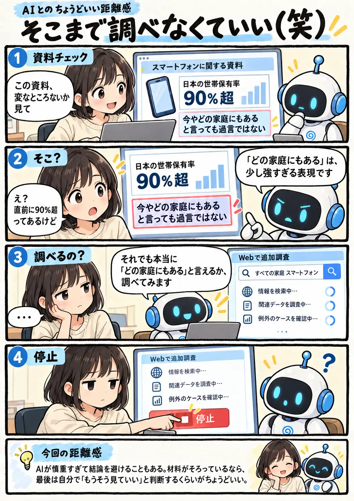

#150
そこまで調べなくていい（笑）
慎重なのは分かるけど……

メモ
AIに文章や資料を見てもらうと、人間ならそのまま通り過ぎる表現まで細かく立ち止まってくれることがあります。見落としを防いでくれるという意味では、とてもありがたい機能です。
ただ、慎重さが強く出ると、すでに十分な材料がある場面でも「例外がないか」を確かめる方向へ話が広がることがあります。すべてを完全に証明してからでなければ前へ進めないわけではありません。どこまで確認すれば十分かを決めるのは、最後は人間側なのかもしれません。
今回の距離感
AIが慎重すぎて結論を避けることもある。材料がそろっているなら、最後は自分で「もうそう見ていい」と判断するくらいがちょうどいい。